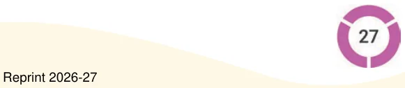

In the expression to find the number of marbles \(- 30 + 5 \times 4 -\) we had to first multiply 5 and 4, and then add this product to 30. This order of operations is clarified by the use of brackets as follows:
\(30 + (5 \times 4)\).
When evaluating an expression having brackets, we need to first find the values of the expressions inside the brackets before performing other operations. So, in the above expression, we first find the value of \(5 \times 4\), and then do the addition. Thus, this expression describes the number of marbles:
\(30 + (5 \times 4\) ) \(= 30 + 20 = 50\).
Example 5: Irfan bought a pack of biscuits for ₹15 and a packet of toor dal for ₹56. He gave the shopkeeper ₹100. Write an expression that can help us calculate the change Irfan will get back from the shopkeeper. Irfan spent ₹15 on a biscuit packet and ₹56 on toor dal. So, the total cost in rupees is \(15 + 56\). He gave ₹100 to the shopkeeper. So, he should get back 100 minus the total cost. Can we write that expression as -
\(100 - 15 + 56\) ?
Can we first subtract 15 from 100 and then add 56 to the result? We will get 141. It is absurd that he gets more money than he paid the shopkeeper! We can use brackets in this case:
\(100 - (15 + 56)\).
Evaluating the expression within the brackets first, we get 100 minus 71, which is 29. So, Irfan will get back ₹29.
